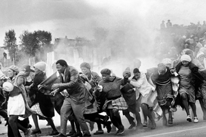
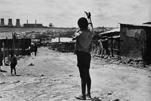
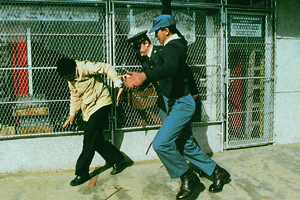
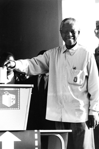

Lezione 21  La decolonizzazione
La decolonizzazione

-
425
435
-
445
460
-
405
465
-
425
490
-
25
285
-

SUDAFRICA
Scontri di strada in Sudafrica: la polizia usa lacrimogeni per disperdere una manifestazione di neri contro la demolizione della bidonville di Leslie Hammond nel 1977.

SOWETO
La terribile desolazione del panorama della bidonville di Soweto in un'eloquente fotografia scattata tra gli anni Cinquanta e Sessanta del Novecento.-

SUDAFRICA
Scene di quotidiana violenza durante il periodo dell'apartheid in Sudafrica: due poliziotti bianchi infieriscono su un nero.
-

SUDAFRICA
Un'immagine simbolica della fine dell'apartheid: Nelson Mandela depone la scheda nell'urna alle prime elezioni libere della Repubblica sudafricana, tenutesi nel 1994 dopo i lunghi e cupi decenni della segregazione razziale.
-
LISBONA
Un ritratto fotografico del dittatore portoghese Antonio de Olivera Salazar, che negli ultimi anni di governo dovrà affrontare con la repressione le ribellioni delle colonie portoghesi in Africa, India e Asia.